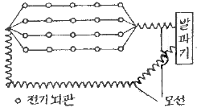
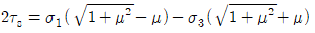
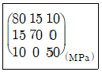
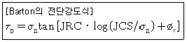
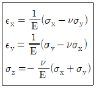
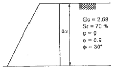
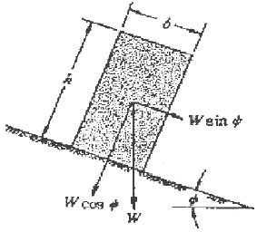

화약류관리기사 (2009-08-30 기출문제)
1과목: 일반화약학
1. 폭약의 산소 공급제로 쓰이지 않는 것은?
- 질산암모늄
- 질산칼륨
- 황
- 과염소산암모늄
(정답률: 알수없음)

2. 다음 중 추진약으로 사용하지 않는 것은?
- 무연화약
- 흑색화약
- 콤포지트
- 니트로글리콜
(정답률: 알수없음)
3. 다음 중 니트로화합물로만 구성된 것은?
- PETN, 니트로글리콜
- 니트로글리세린
- TNT, 테트릴
- PETN, 니트로글리세린
(정답률: 알수없음)
4. 화약류의 산소 평형에서 1g당 산소 과부족량(g)이 +0.200인 물질은?
- 질산암모늄
- 질산칼륨
- 니트로글리콜
- 테트릴
(정답률: 알수없음)
5. 니트로셀룰로오스가 외부에 환경변화 등에 의하여 그 일부분이 자연분해될 때 생성되는 가스는?
- N2O7
- N2O
- N2O5
- NO
(정답률: 알수없음)
6. 초안유제폭약(ANFO)의 특성을 옳게 설명한 것은?
- 유제를 주성분으로 하고 예감제로서 금속분을 가한 것이다.
- 유제는 보통 인화점이 50℃ 이상의 경유가 적합하다.
- NH4NO3외 유제의 배합비는 60:40이 가장 좋다.
- 충격, 마찰 및 가열에 매우 민감하다.
(정답률: 알수없음)
7. 다이너마이트의 폭속을 도트리쉬법으로 시험한 결과 납판위 도폭선의 중심과 폭흔과의 거리가 50mm로 측정되었다. 이 다이너마이트의 폭속은 몇 m/s인가? (단, 도포선의 폭속은 7000m/s, 다이너마이트에 도폭선을 꽂은 간격은 100mm이었다.)
- 5000
- 6000
- 7000
- 8000
(정답률: 알수없음)
8. 다음 중 작약(bursting explosive)으로 사용하는 것은?
- 면화약
- 트리니트로톨루엔
- 뇌홍
- 질화납
(정답률: 알수없음)
9. 강도가 예민한 뇌홍을 안전하게 저장하는 일반적인 방법으로 옳은 것은?
- 암모니아수 속에 저장한다.
- 물 속에 저장한다.
- 건조한 모래 속에 저장한다.
- 왕수 용액 중에 저장한다.
(정답률: 알수없음)
10. 다음 화약류 중 자연분해의 경향이 적은 것만으로 되어 있는 것은?
- 다이너마이트, 테트릴, ASFO
- 면약, DDNP, PETN
- 흑색화약, 무연화약, TNT
- 컴포지션 B, 아지화납, 헥소겐
(정답률: 알수없음)
11. 붉은 불꽃을 발생하므로 위험신호를 알리는데 사용하는 신호염관(Fire signal)의 주성분은?
- 과염소산암모늄+질산암모늄
- 염소산암모늄+질산암모늄
- 과염소산암모늄+질산스트론튬
- 질산암모늄+질산나트륨
(정답률: 알수없음)
12. 다음 중 TNT의 주원료로 사용되는 것은?
- 페놀
- 벤졸
- 톨루엔
- 크실렌
(정답률: 알수없음)
13. 폭약의 성능 시험 방법에 대한 설명으로 옳은 것은?
- 마찰감도시험은 폭약의 동적효과를 측정하는 시험이다.
- 내열시험은 폭약의 위력을 측정하는 시험이다.
- 가열시험은 폭약의 안정도를 측정하는 시험이다.
- 폭속시험은 폭약의 감도를 측정하는 시험이다.
(정답률: 알수없음)
14. Composite 추진약에서 연료 결합제가 아닌 것은?
- eppxy resin
- ammonium nitrate
- polyurethane
- polysulfide
(정답률: 알수없음)
15. 흑색화약에 대한 설명 중 틀린 것은?
- 도화선의 심약으로 사용할 수 있다.
- TNT를 예감제로 사용한다.
- 습기를 피하면 장시간 저장할 수 있다.
- 밀폐용기 중에서는 폭연한다.
(정답률: 알수없음)
16. 다음 중 수중 발파에 가장 적합한 폭약은?
- 흑색화약
- 초안폭약
- 초유폭약
- 슬러리폭약
(정답률: 알수없음)
17. 도폭선의 폭속 범위에 가장 가까운 것은?
- 2000~3000m/s
- 3000~5000m/s
- 5500~7000m/s
- 7500~9000m/s
(정답률: 알수없음)
18. 니트로셀룰로오스에 대한 설명 중 틀린 것은?
- 질산기 수에 따라 강면약과 약면약으로 나눌 수 있다.
- 비중은 약 1.6~1.7정도이다.
- 장기저장에 의해 자연분해가 일어날 우려가 있다.
- 알코올에는 녹으나 아세톤에는 녹지 않는다.
(정답률: 알수없음)
19. 뇌관에 대한 설명으로 틀린 것은?
- 공업용 뇌관은 습기가 많은데 놓아두면 흡습하여 발화되기 어렵다.
- 첨장약의 주성분은 TNT, NG이다.
- 공업뇌관은 구리, 알루미늄 등의 금속 관체에 첨장약, 기폭약을 충전한 것이다.
- 공업뇌관에 전기적 점화장치를 달아놓은 것을 전기뇌관이라 한다.
(정답률: 알수없음)
20. 분상 다이너마이트는 교질 다이너마이트에 비하여 흡습성이 크기 때문에 습기에 주의해야 한다. 다음 중 그 이유를 가장 옳게 설명한 것은?
- 흡습에 따라 니트로글리세린이 동시에 녹아 나오기 때문에
- 흡습한 것은 겨울에 얻기 쉽고 폭발감도도 예민해지기 때문에
- 흡습한 것은 폭발감도가 저하하여 불발이나 잔유물이 생성되기 때문에
- 흡습한 것은 안정도가 저하되고 자연분해를 일으키기 쉽기 때문에
(정답률: 알수없음)
2과목: 발파공학
21. 파괴효과의 관점에서 제발발파와 비교하여 MS 발파법의 특징으로 틀린 것은?
- 분진의 발생량이 비교적 작다.
- 발파에 의한 진동이 적다.
- 파쇄효과가 크고, 암석이 적당한 크기로 잘게 깨진다.
- 뇌관의 수가 적게 사용된다.
(정답률: 알수없음)
22. 암석 약 1m3을 발파할 때 필요로 하는 폭약량이라는 뜻을 가진 암석계수(gㆍkg/m3)의 평균값이 제일 작은 암석은?
- 안산암
- 응회암
- 편마암
- 석회암
(정답률: 알수없음)
23. 공저깊이(sub-drilling) 1m, 최소저항선 3m, 공간격 3m의 패턴으로 천공하여 길이 24m, 폭 12m, 높이 10m인 수직벤치를 절취하려고 한다. 공당 장약량이 25kg이라면 이 패턴에 대한 비장약량(kg/m3)은?
- 0.125
- 0.262
- 0.313
- 0.424
(정답률: 알수없음)
24. 암반의 지질학적 특성을 고려하여 비장약량을 선정하여 발파패턴을 설계하는데 이용되는 Lilly의 발파지수(Bl)와 관계된 요소가 아닌 것은?
- 암반형태
- 절리방향
- 비중지수
- 암질지수
(정답률: 알수없음)
25. 발파진동의 일반적인 특성에 대한 설명 중 맞는 것은?
- 발파에 의해 발생하는 파들은 크게 압축파, 인장파, 표면파로 나눌 수 있다.
- 발파에 의해 발생하는 파들은 암석이나 토양 속을 진행하는 물체파와 표면을 따라 전파하는 표면파로 나눌 수 있다.
- 물체파는 레일리파로 가장 중요하며 전달거리가 멀어질 때도 측정이 가능하다.
- 짧은 거리에서의 발파는 주로 표면파를 만든다.
(정답률: 알수없음)
26. 시험발파를 통해 V(cm/sec)=150(R/√W)-1.57의 발파진동식을 얻었다. 발파현장 주변에 보안물건이 다음 보기와 같이 각각 있을 경우 지발당 최대 허용장약량이 가장 작은 보안물건은 어느 것인가?
- 발파지점으로부터의 거리:45m, 허용 진동속도:0.5cm/sec
- 발파지점으로부터의 거리:65m, 허용 진동속도:0.3cm/sec
- 발파지점으로부터의 거리:28m, 허용 진동속도:1.0cm/sec
- 발파지점으로부터의 거리:41m, 허용 진동속도:0.7cm/sec
(정답률: 알수없음)
27. 20공의 발파공을 기폭하기 위한 뇌관으로 비전기식 뇌관 LP 1번, LP 2번, LP 3번, LP 4번, LP 5번이 각각 4개씩 기폭되도록 하기 위해서는 자연시차가 25ms인 연결뇌관이 최소 몇 개가 필요한가?
- 3개
- 4개
- 5개
- 6개
(정답률: 알수없음)
28. 다음 충격하중에 대한 설명 중 가장 거리가 먼 것은?
- 충격하중은 하중이 순간적으로 극히 높은 유한치로 상승하였다가 그 후 천천히 감소되는 하중으로 작용시간은 수초에 이른다.
- 충격하중 하에서 물체 내에는 현저한 응력의 불균일성이 발생한다.
- 충격하중에 의해 물체 내에 유발된 응력분포는 일반적으로 과도적이며 극히 국한된다.
- 충격하중을 받는 물체는 동적양상을 지니며, 그로 인해 물체에 운동을 일으킨다.
(정답률: 알수없음)
29. 다음 중 Trim Blasting에 관한 설명으로 틀린 것은?
- 주발파 후 방파가 이루어진다.
- 천공간격은 Pre-splitting 보다는 길다.
- 천공간격은 일반적으로 저항선의 1.3배 정도이다.
- 공저장약은 주상장약밀도의 2~3배 정도로 집중장약한다.
(정답률: 알수없음)
30. 심발발파법 중 V-cut 천공시 천공장이 1.2,m일 때 기저장약은 일반적으로 몇 cm인가?
- 40cm
- 60cm
- 80cm
- 100cm
(정답률: 알수없음)
31. 계단높이 15m, 계단의 폭 15m, 상대암석계수 0.4kg/m3인 암반에 천공경 89m로 수평면과 약 70° 경사방향(3:1)으로 하향 천공하여 다이나마이트 폭약을 사용하여 발파하였다. 이 때 최대 저항선(Bmax)은 얼마인가? (단, 계단의 좌우는 수평방향으로 구속되어 있으며, 계단폭 좌우에 천공한다. 다이나마이트 폭약의 정전밀도 1.25kg/ℓ이다.)
- 약 3.2m
- 약 3.5m
- 약 3.8m
- 약 4.1m
(정답률: 알수없음)
32. 다음 중 측벽효과(channel effect)에 관한 설명으로 거리가 먼 것은?
- 불발잔류적이 발생하기 쉽다.
- 약경이 공경보다 적을 때 발생한다.
- 저폭속의 에멀젼 폭약을 사용할 때 주로 발생한다.
- pre-splitting 발파에서는 측벽효과를 방지하기 위해 진폭성이 좋은 점폭약을 사용해야 한다.
(정답률: 알수없음)
33. 건물 해체발파 전 발파대상 구조물의 주요부위에 장전된 장약의 효율을 높이기 우ㅚ해 주요부위를 파쇄하는 작업을 사전 취약화 작업이라고 한다. 다음 중 일반적으로 적용 되는 사전 취약화 작업의 범위에 해당하지 않는 구조물의 부위는?
- 기둥
- 내력벽
- 비내력벽
- 코아부
(정답률: 알수없음)
34. 누두지수(n)=1.2일 때 Brallion 공식에 의해 누두지수함수 f(n)을 구하면 얼마인가?
- 1.26
- 1.59
- 2.34
- 2.87
(정답률: 알수없음)
35. 다음 발파원리에 대한 설명 중 틀린 것은?
- 암석은 폭약의 폭파에 의해 크게 3단계의 작용을 받는 데 첫 번째 단계에서는 기폭지점에서 시작하여 발파공벽을 부숴 버림으로써 발파공이 팽창한다.
- 두 번째 단계에서는 인장 음력파가 발파공에서 방사형으로 전주위에 암석의 탄성파 속도와 같은 속도로 확산된다.
- 세 번째 단계에서는 방출된 다량의 기체가 고압으로 갈라진 균열 사이로 들어가서 그 균열을 팽창시킨다.
- 발파공 내의 폭약반응은 매우 신속하여, 폭약의 유효작용은 기폭시점으로부터 매우 짧은 시간 내에 완료된다.
(정답률: 알수없음)
36. 다음 중 천공경 45mm, 천공장 10m로 계단발파를 설계할 때 발생할 수 있는 천공오차(E)는 얼마인가?
- 0.25m
- 0.35m
- 0.45m
- 0.55m
(정답률: 알수없음)
37. 다음 그림과 같이 전기뇌관 20개를 직ㆍ병렬로 결선할 때 제발발파하기 위한 소요전압은 얼마인가? (단, 뇌관 1개의 저항은 1.2[Ω], 발파모선 1[m]의 저항은 0.02[Ω], 총연장 100[m]라 하고 발파기의 내부저항은 고려하지 않고, 소요전류 2[A]로 한다.)

- 10[V]
- 16[V]
- 28[V]
- 52[V]
(정답률: 알수없음)
38. 발파원으로부터 100m 떨어진 지점에서 발파폭풍압의 측정치가 0.02 atm이라면, 측정 지점에서의 음압수준은?
- 140dB
- 154dB
- 160dB
- 174dB
(정답률: 알수없음)
39. 발파적업표준안전작업지침(노동부고시) 제5조 4함에 의하면 주택ㆍ아파트와 상가(금이 없는 상태)에 대한 감각의 건물 기초에서의 허용 진동치(cm/sec)는 얼마인가?
- 0.2, 0.5
- 0.3, 0.5
- 0.5, 1.0
- 0.5, 2.0
(정답률: 알수없음)
40. 다음 중 공발의 일반적인 원인이 될 수 있는 것은?
- 폭약이 노화하였을 때
- 암반에 많은 균열층이 있을 때
- 자유면에 경사 천공하였을 때
- 뇌관의 각선이 절단되었을 때
(정답률: 알수없음)
3과목: 암석역학
41. 직경 50mm, 길이 100mm인 코어 시험편에 대해 직경방향 점하중강도시험을 실시한 결과 10kN에서 파괴가 발생하였다. 일축압축강도(σc)는 얼마인가?
- 3.2MPa
- 4MPa
- 80MPa
- 96MPa
(정답률: 알수없음)
42. 암석의 내부마찰각설에서 전단강도는 다음과 같이 표현된다. 암석의 일축압축파괴강도가 100MPa이고, 암석의 내부 마찰각이 45°라면 이 때 암석의 전단강도는 약 얼마인가? (단,

)- 8MPa
- 12MPa
- 16MPa
- 21MPa
(정답률: 알수없음)
43. 다음 중 암반사면의 안정해석에 적용할 수 없는 방법은?
- 평사투영법
- 한계평형법
- 영향도표법
- 유한차분법
(정답률: 알수없음)
44. 균일한 물체의 탄성정수는 5개이며 이들은 각각 종속적이다. 포아송비가 0.3인 암석에 있어서 영율, 강성률, 체적계수(bulk modulus), 레임 상수(Lame's constant)를 큰 순서대로 나열한 것은? (단, 큰 값 → 작은 값)
- 영률-체적계수-레임 상수-강성률
- 레임 상수-영률-체적계수-강성률
- 레임 상수-강성률-체적계수-영률
- 영률-강성률-레임 상수-체적계수
(정답률: 알수없음)
45. 불연속면을 평사투영망에 표시하는 것에 대한 설명 중 틀린 것은?
- 불연속면에 수직한 직선의 투영점을 이 불연속면의 극점이라 부른다.
- 대원상의 점들은 이 불연속면 상에 놓여있는 직선들의 투영점들이다.
- 투영망의 중심에서 두 대원의 교점까지 각도를 읽으면 이 값이 두 불연속면의 교선의 경사각이 된다.
- 임의의 불연속면을 나타내는 대원의 양 끝점을 연결하는 선은 투영망의 중심을 지나며 이 선은 불연속면의 주향과 평행하다.
(정답률: 알수없음)
46. 암반사면에서 평면파괴가 일어나기 위해 만족되어야 하는 기하학적인 조건으로서 틀린 것은?
- 미끄러짐면은 경사면에 평행하거나 거의 평행해야 한다.
- 미끄러짐면의 경사각은 그 면의 마찰각보다 작아야 한다.
- 미끄러짐면의 경사각은 사면의 경사각보다 작아야 한다.
- 미끄러짐에 저항력을 갖지 않는 이완면이 미끄러짐의 측면 경계부로서 암반 내에 존재해야 한다.
(정답률: 알수없음)
47. 시추공 벽면에서 공경방향의 변형은 평면응력상태와 평면변형률상태에 따라 달라진다. 포아송비가 0.20일 때(평면변형률상태의 변위/평면응력상태의 변위)의 비는 얼마인가?
- 0.8
- 0.96
- 1.04
- 1.2
(정답률: 알수없음)
48. 등방탄성체에 작용하는 응력텐서가 다음과 같다. 탄성계수가 5GPa, 포아송비가 0.2라면 이때의 체적팽창률은 얼마인가?

- 0.011
- 0.021
- 0.024
- 0.035
(정답률: 알수없음)
49. 초기응력을 측정하는 수압파쇄법의 특성을 응력해방법(overcoring method)과 비교 설명한 것으로 틀린 것은?
- 오버코어링작업이 불필요하기 때문에 그만큼 비용이 절약된다.
- 접근점으로부터 심도가 깊은 곳까지 적용할 수 있다.
- 응력을 측정하는 것이 아니고 변형률을 직접 측정하는 방법이다.
- 탄성계수 등을 결정할 필요가 없다.
(정답률: 알수없음)
50. 무한 암반내 원형 공동을 굴착하고 정수압(-P)을 작용시켰다면 원형 공동 벽면에서의 접선방향응력(tangential stress)은? (단, 암반은 탄성거동을 한다고 가정)
- 0
- -2.0P
- -2.5P
- -3.0P
(정답률: 알수없음)
51. 암반사면의 불연속면이 주향 N45E, 경사 40NW였다, 이를 수치해석의 입력 자료로 사용하기 위해서 검사방향/경사로 변환한 것 중 옳은 것은?
- 135/40
- 3⑤/40
- 045/40
- 315/40
(정답률: 알수없음)
52. 암반분류 방법 중 RMR과 Q 분류법에 대한 설명으로 틀린 것은?
- 암질지수는 두 방법 모두에서 평가요소중의 하나이다.
- RMR에서는 암석의 일축압축강도 요소가 평가되며, Q분류법에서는 암석의 전단강도 관련 요소가 평가된다.
- Q 분류법에서의 단점은 응력조건을 고려할 수 없다는 것이다.
- RMR에서 불연속면의 방향성은 기본점수에 포함되지 않는다.
(정답률: 알수없음)
53. 모어(Mohr)의 파괴포락선을 직선으로 가정할 때 인장강도 40kg/cm2, 단축압축강도 400kg/cm2인 암석의 전단강도는 약 얼마인가?
- 63kg/cm2
- 80kg/cm2
- 100kg/cm2
- 126kg/cm2
(정답률: 알수없음)
54. 암석의 인장강도시험에서 파단시험(rupture test)이란 일반적으로 다음 중 어느 것을 뜻하는가?
- 휨시험
- 압열인장시험
- 직접인장시험
- 압입시험
(정답률: 알수없음)
55. 터널설계와 관련하여 불연속면의 주향과 터널의 굴진 방향이 어떤 경우일 때 굴착작업의 안정성에 가장 유리한가?
- 주향이 터널의 굴진방향과 수직이고, 경사방향으로 굴착
- 주향이 터널의 굴진방향과 수직이고, 경사의 반대 방향으로 굴착
- 주향이 터널의 굴진방향과 평행하고, 경사각도가 낮을 때
- 주향이 터널의 굴진방향과 평행하고, 경사각도가 높을 때
(정답률: 알수없음)
56. Barton은 최대전단강도와 수직응력사이의 경험적인 관계식을 다음과 같이 제안하였다. 이 식에서 JRC는 무엇인가?

- 절리반도계수
- 체적절리계수
- 절리거칠기계수
- 절리압축강도
(정답률: 알수없음)
57. 현지암반의 연속체 안정성 해석을 위하여 실내시험을 수행한 결과, 암석의 단축압축강도가 120MPa, 직접인장시험강도가 12MPa으로 측정되었다. 이 암반이 Mohr-Coulomb 파괴기준에 따른다고 한다면, 내부마찰각은 얼마인가?
- 45°
- 55°
- 65°
- 75°
(정답률: 알수없음)
58. 암석의 탄성파 전파 속도에 영향을 미치는 요인에 대한 설명 중 맞는 것은?
- 암석에 작용하는 구속응력이 증가할수록 S파 속도는 감속한다.
- 암석의 온도가 상승할 경우 P파 속도는 증가한다.
- 층상암석에서 층에 평행한 방향으로의 P파 전파속도가 층에 수직한 방향보다 더 작게 나타난다.
- 공극률이 큰 암석에서 P파에 비해 S파는 함수상태에 따른 속도변화가 거의 없다.
(정답률: 알수없음)
59. Hoek-Brown 파괴이론에 대한 설명으로 틀린 것은?
- 심하게 파손된 암반일수록 상수 m은 커진다.
- 절리암반의 파괴거동 예측에 사용된다.
- 신선암인 경우 상수 s는 1이된다.
- 현지암반의 RMR값이 클수록 상수 m은 증가한다.
(정답률: 알수없음)
60. 탄성체에 대하여 아래와 같은 응력-변형률의 관계가 성립하는 경우는 다음 중 어느 것에 해당하는가? (단, σx, σy는 수직응력, εx, εy, εz는 수직변형률, E, v는 각각 영률, 포아송비를 나타낸다.)

- 평면응력상태
- 평면변형률상태
- 삼축응력상태
- 회전대칭변형률상태
(정답률: 알수없음)
4과목: 화약류 안전관리 관계 법규
61. 다음 중 화약류관리보안책임자 면허갱신신청서 제출시 첨부 할 서류가 아닌 것은?
- 구면허증
- 신체검사서
- 사진
- 주민등록등본
(정답률: 알수없음)
62. 다음 중 화약류관리보안책임자의 의무사항이 아닌 것은?
- 화약류저장소의 위치구조를 업무상 편리하게 변경하고 지방경찰청장에게 보고하는 업무
- 화약류저장소 부근에 화재가 발생시 응급조치를 지휘하는 업무
- 위해예방규정의 작성과 그 준수상황의 지도ㆍ감독
- 안전교육의 계획과 그 실시상황의 지되ㆍ감도
(정답률: 알수없음)
63. 화약류 1급 저장소에 폭약 10톤을 저장할 때 제1종 보안물건과의 보안거리의 기준은?
- 380m 이상
- 340m 이상
- 320cm 이상
- 260m 이상
(정답률: 알수없음)
64. 다음 중 총포ㆍ도검ㆍ화약류 등 단속법 시행령에 규정된 ‘정원’에 대한 설명으로 맞는 것은?
- 동시에 동일장소에서 작업할 수 있는 종업원의 최대인원수를 말한다.
- 1일간 동일장소에서 작업할 수 있는 종업원의 최소인원수를 말한다.
- 동시에 동일장소에서 작업할 수 있는 종업원의 최소인원수를 말한다.
- 1일간 동일장소에서 작업할 수 있는 종업원의 최소인원수를 말한다.
(정답률: 알수없음)
65. 화약류 저장소에서 일어나는 일들 중 잘못된 것은? (단, 수중저장소 제외)
- 저장소에서 화약류를 출고할 때 저장기간이 오래된 것부터 출고하였다.
- 저장소안에서 수불상황을 확인하기 위하여 뇌관 상자의 뚜껑을 열어 뇌관 숫자를 파악하였다.
- 저장소 내부에 무연화약 또는 다이너마이트를 저장하였을 때 온도계를 비치하였다.
- 저장소의 경계 울타리 안에는 필요없는 사람의 출입을 못하도록 막았다.
(정답률: 알수없음)
66. 다음 중 화약류를 양수하고자 하는 사람은 누구의 허가를 받아야 하는가?
- 저장소 관할 지방경찰청장
- 저장소 관할 경찰서장
- 주소지 관할 경찰서장
- 사용지 관할 지방경찰청장
(정답률: 알수없음)
67. 수중저장소에 화약류를 저장하는 경우 저장방법 및 취급방법으로 틀린 것은?
- 가루로 된 화약류는 15퍼센트 정도의 물기를 머금게 한 후 물이 스며들 수 없게 포장을 하여 나무상자에 넣을 것
- 덩어리화약류는 물에 항상 잠긴 상태로 저장할 것
- 화약류는 수면으로부터 수심 50센티미터 이상의 물속에 저장할 것
- 저장소 내부는 환기에 유의하고 무연화약 또는 다이나마이트를 저장하는 경우에는 온도계를 장치할 것
(정답률: 알수없음)
68. 다음 중 동일 차량에 함께 실을 수 없는 화약류는?
- 폭약-도폭선
- 화약-전기뇌관(특별용기에 들어 있는 것)
- 도폭선-실탄ㆍ공포탄
- 포경용 신관-꽃불류(크래커블인옥)
(정답률: 알수없음)
69. 화약류 운반신고와 관련한 설명으로 옳지 않은 것은?
- 화약류를 운반치 않았을 때는 화약류운반신고필증을 발송지 관할 경찰서장에게 반납한다.
- 운반이 완료되었을 때는 화약류운반신고필증을 도착지 관할 경찰서장에게 반납한다.
- 운반을 하지 못하고 운반기간이 경과했을 때는 화약류 운반신고필증을 발송지 관할 경찰서장에게 반납한다.
- 화약류운반신고서는 특별한 사정이 없는 한 운반개시 3시간전까지 발송지 관할 경찰서장에게 제출한다.
(정답률: 알수없음)
70. 다음 중 화약류관리보안책임자 면허를 발급 받을 수 없는 사람은?
- 20세의 여자
- 화약류관리보안책임자면허 대여행위로 면허취소 후 6개월이 경과된 사람
- 총포ㆍ도검ㆍ화약류 등 단속법을 위반하여 기소유예처분을 받은 사람
- 총포ㆍ도검ㆍ화약류 등 단속법을 위반하여 징역 6월과 집행유예 1년을 선고받고 그 집행유예기간이 끝난 날부터 1년이 지난 사람
(정답률: 알수없음)
71. 운반신고를 하지 아니하고 운반할 수 있는 화약류의 종류 및 수량으로 맞는 것은?
- 공포탄(1개당 장약량 0.5g 이하):10만개
- 장난감용 꽃불류:500kg
- 미진동파쇄기:10000개
- 폭발천공기:700개
(정답률: 알수없음)
72. 질산에스텔 및 그 성분이 들어있는 화약 또는 폭약으로서 제조일로부터 2년이 된 것은 어떤 안정도 시험을 하여야 하는가?
- 2년마다 유리산시험 또는 내열시험
- 매년마다 유리산시험 또는 내열시험
- 그때와 그때로부터 6월마다 내열시험
- 그때와 그때로부터 3월마다 내열시험
(정답률: 알수없음)
73. 꽃불류의 발사용 화약에 점화하여도 그 화약이 폭발 또는 연소되지 아니하는 때에는 그 발사통에 많은 양의 물을 넣고 얼마 이상 경과한 후에 꽃불류를 꺼내야 하는가? (단, 법령상 기준임)
- 5분
- 10분
- 15분
- 30분
(정답률: 알수없음)
74. 다음 중 폭약 1톤으로 환산되는 화약류의 수량으로 맞는 것은?
- 실탄 또는 공포탄 200만개
- 신관 또는 화관 10만개
- 신호뇌관 20만개
- 미지농파쇄기:10만개
(정답률: 알수없음)
75. 다음 중 지상에 설치하는 3급 저장소의 위치, 구조 및 설비의 기준으로 옳은 것은?
- 저장소의 벽(앞면의 벽 제외)은 두께 20cm 이상의 콘크리트로 해야 한다.
- 앞면의 벽을 두께 10cm 이상의 철근콘크리트로 해야 한다.
- 지붕은 폭발 시 가볍게 흩어질 수 있는 목재로 사용해야 한다.
- 화약 또는 폭약과 화공품을 동시에 저장하기 위한 격벽은 두께 40cm 이상의 보강콘크리트블록으로 해야 한다.
(정답률: 알수없음)
76. 화약류 판매업자가 공공의 안녕질서를 해할 염려가 있다고 믿을 만한 상당한 이유가 있어 이에 따른 개선명령을 했으나 3회 위반했을 경우 행정처분기준은?
- 허가취소
- 5월 효력정지
- 3월 효력정지
- 1월 효력정지
(정답률: 알수없음)
77. 다음은 화약류의 허가와 관련된 내용을 설명한 것이다. 틀린 항목은?
- 화약류를 수입한 사람은 지체없이 행정안전부령이 정하는 바에 의하여 수입자를 관할하는 지방경찰청장에게 신고하여야 한다.
- 화공품을 수출 또는 수입하고자 하는 사람은 행정안전부령이 정하는 바에 의하여 그때마다 지방경찰청장의 허가를 받아야 한다.
- 화약류 제조업을 영위하고자 하는 사람은 제조소마다 행정안전부령이 정하는 바에 의하여 경찰청장의 허가를 받아야 한다.
- 화약류의 판매업을 영위하고자 하는 사람은 판매소마다 행전안전부령이 정하는 바에 의하여 판매소의 소재지를 관할하는 지방경찰청장의 허가를 받아야 한다.
(정답률: 알수없음)
78. 화약류관리보안책임자가 화약류의 취급(제조를 제외한다.)전반에 관한 사항을 주관하면서 대통령령이 정하는 안전상의 감독업무를 게을리 하였다면 어떤 처벌을 받는가?
- 5년 이하의 징역 또는 2천만원 이하의 벌금의 형
- 5년 이하의 징역 또는 1천만원 이하의 벌금의 형
- 3년 이하의 징역 또는 700만원 이하의 벌금의 형
- 3년 이하의 징역 또는 500만원 이하의 벌금의 형
(정답률: 알수없음)
79. 화약류 운반방법의 기술상의 기준에 의하면 펜타에리스릿트는 수분 또는 알코올분이 몇 %정도를 머금은 상태로 운반하여야 하는가?
- 25%
- 23%
- 20%
- 15%
(정답률: 알수없음)
80. 사용허가를 받지 아니하고 화약류를 사용할 수 있는 수량으로서 건축ㆍ토목공사용으로 1일 동일한 장소에서 사용할 수 있는 수량은?
- 산업용 실탄 100개 이하
- 미진동파쇄기 200개 이하
- 광쇄기 30개 이하
- 건설용 타정총용 공포탄 10,000개 이하
(정답률: 알수없음)
5과목: 굴착공학
81. Terzaghi의 암반 하중 분류법에서 가장 불리한 암반의 상태는?
- 팽창성 암반(Swelling rock)
- 압착성 암반(Squeezing rock)
- 심한 블록상 및 층상(Very blocky and seamy)
- 완전파쇄(Completely crushed)
(정답률: 알수없음)
82. 터널시공 중 용수대책으로 웰포인트(well-point) 공법을 이용하고자 한다. 이 공법을 적용하기 위한 주변의 지반의 투수계수 범위로 가장 적당한 것은?
- 10-2~10-4cm/sec
- 10-6~10-8cm/sec
- 10-9~10-11cm/sec
- 10-12~10-14cm/sec
(정답률: 알수없음)
83. 다음의 지하구조물 중 요구되는 안정성이 가장 큰 것은?
- 임시적인 광산 갱도
- 대규모 도로 터널
- 지하 철도역
- 지하 저장시설
(정답률: 알수없음)
84. 다음 중 터널의 안정성을 확보하기 위하여 설치하는 콘크리트 라이닝의 미세 균열의 발생 원인이 아닌 것은?
- 콘크리트 건조에 따른 수축
- 콘크리트 온도 강하에 따른 온도 수축
- 터널 주변 지반의 상황 변화에 따라 하중이 증가할 때
- 2차 콘크리트 라이닝의 두께를 두껍게 할 때
(정답률: 알수없음)
85. 지하 유류저장 공동에 관한 설명으로 틀린 것은?
- 지하저장방식으로 육상저장방식에 비하여 대규모 저장이 가능하고 시설이 반영구적이므로 투자비, 운영유지비가 저렴하다.
- 기름이 물보다 가볍고 서로 섞이지 않는다는 원리를 이용하여 지하수면 아래에 설치한다.
- 지하수위의 정수압을 저장유류의 기화 압력보다 낮게 유지시키므로서 유류가 공동 밖으로 새어나가는 것을 방지한다.
- 지하수압에 의한 유류의 누출을 막기 위해서 저장공동상부에 수벽터널을 설치하기도 한다.
(정답률: 알수없음)
86. 다음 중 숏크리트의 작용효과가 아닌 것은?
- 내압 효과
- 봉합 효과
- 응력 집중 완화 효과
- 지반 아치 형성 효과
(정답률: 알수없음)
87. 다음 중 광역변성암에 해당하지 않는 것은?
- 편마암(gneiss)
- 천매암(phyllite)
- 점판암(slate)
- 혼펠스(hornfels)
(정답률: 알수없음)
88. 직경 10cm인 공을 이용하여 암반인발시험을 한 결과 누두형 파괴가 발생하였다. 파괴 하중은 60t이고, 파괴된 누두의 높이와 반경은 모두 45cm이었다. 이 암반의 전단강도는?
- 16.61kg/cm2
- 23.15kg/cm2
- 33.22kg/cm2
- 66.44kg/cm2
(정답률: 알수없음)
89. 다음 중 트릴사면의 파괴 형태가 아닌 것은?
- 사면선단 파괴
- 사면쐐기 파괴
- 사면내 파괴
- 사면저부 파괴
(정답률: 알수없음)
90. 다음 중 수지터널 굴착에 가장 유용한 방법은?
- 메세트 공법
- 언더피닝 공법
- 쉴드 공법
- 파이프 루프 공법
(정답률: 알수없음)
91. 암반 터널의 설계방법은 크게 세 가지로 분류되는데, 이에 해당되지 않는 것은?
- 모형공동에 의 방법
- 해석적 방법
- 경향적 방법
- 계측에 의한 방법
(정답률: 알수없음)
92. 다음 중 방수공에 대한 설명으로 틀린 것은?
- 지하수위보다 깊은 터널에서는 지하수 용출을 완전히 막을 수 있는 방수공을 채택한다.
- 방수공은 면상 방수공과 선상 방수공으로 대별할 수 있고 선상 방수공은 뿜칠방식과 시트방식으로 나뉜다.
- 방수 시트는 콘크리트 타설시에 파손되지 않는 강도 및 내구성, 시공성이 좋은 것을 선정하여야 한다.
- 복공 완료 후의 이어붓기 이음이나 균열에서는 누수는 도수공법이나 지수주입공법을 사용한다.
(정답률: 알수없음)
93. 다음 그림에서 옹벽이 받는 전주동토압은 얼마인가?

- 8.46t/m
- 9.46t/m
- 10.44t/m
- 11.44t/m
(정답률: 알수없음)
94. 다음 그림은 사면위 블록의 기하학적 조건을 나타낸 것이다. 블록이 안정하고, 미끄러짐이나 잔도가 일어나지 않는 조건은 어느 것인가? (단, ø는 마찰각이고, Ψ는 사면의 경사각이다.)

- Ψ＜ø 및 b/n＞tanΨ
- Ψ＜ø 및 b/n＜tanΨ
- Ψ＞ø 및 b/n＞tanΨ
- Ψ＞ø 및 b/n＜tanΨ
(정답률: 알수없음)
95. 지하수면이 지표면 1m 아래에 위치하는 모래지반에서 지하수면 위쪽의 단위중량(γt)이 1.7t/m3. 지하수면 아래의 포화단위중량(γsat)이 1.8t/m3이고, 정지토압계수(Ko)가 0.5일 때, 지표면 아래 5m 지점에서의 수평방향 전응력(σh)은 얼마인가?
- 2.45t/m2
- 4.45t/m2
- 6.45t/m2
- 8.45t/m2
(정답률: 알수없음)
96. 평사투영해석에서 구면상의 점을 구의 중심을 통과하는 수평면상에 투영하기 위한 투영법은?
- 등면적 투영법
- 등각 투영법
- Lambert 투영법
- Schmidt 투영법
(정답률: 알수없음)
97. 원지반이 연약하고 불안정한 지질이어서 조기에 인버트의 폐합이 필요한 경우나 팽창성을 보이는 변위가 큰 원지반 등의 경우에 사용되어 지표침하 방지 등에 유효한 NATM의 굴착공법은?
- 롱 벤치컷(long bench cut) 공법
- 미니 벤치컷(mini bench cut) 공법
- 다단 벤치컷(multi-bench cut) 공법
- 사이드 파일럿(side pilot tunneling) 공법
(정답률: 알수없음)
98. 다음 중 터널 굴착으로 인한 지표 침하의 원인이 아닌 것은?
- 암반의 흡수팽창
- 암반의 응력해방
- 터널주변 암반의 이완
- 지하수위 저하
(정답률: 알수없음)
99. 지반이 연약하고 굴착 심도가 깊어 흙막이 지보공에 토압이나 수압이 작용하는 경우, 본체의 윗바닥판의 철근 콘크리트를 먼저 타설하여 흙막이 지보공으로 이용하면서 하부의 굴착을 실시하는 공법은?
- 트랜치 공법
- 분할 굴착 공법
- 연권 공법
- 깊은 기포 공법
(정답률: 알수없음)
100. 터널 굴착시에 발생하는 주변 암반의 변위 거동을 명백히하여 이완영역(relaxed zone)의 유무나 그 크기를 구할 목적으로 하는 계측항목은?
- 지중변위측정
- 천단침하측정
- 지중침하측정
- 내공변위측정
(정답률: 알수없음)